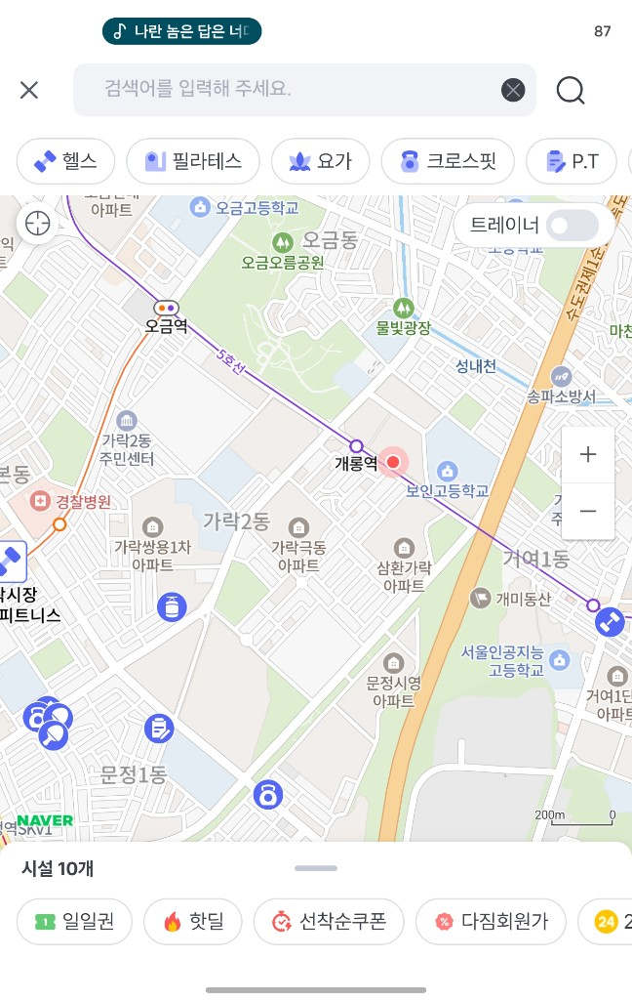

다짐 지도개편 — 운동시설 탐색 및 필터 UX 개선
프로젝트 Overview
다짐의 핵심 고객 여정인 지도 화면은 운동시설 탐색의 시작점이자, 결제로 이어지는 핵심 전환 구간입니다. 그러나 기존 지도는 정보 밀도가 낮아 고객이 원하는 시설을 비교·선택하기 어려웠고, 접속 후 짧은 체류와 높은 이탈로 이어지고 있었습니다.
지도를 단순한 위치 표시 UI가 아닌, 매출을 만드는 핵심 화면으로 재정의하고 정보 구조와 UX를 전면 개편했습니다.
핵심 Pain Point
- 지도에 전달되는 정보 밀도 부족으로 시설 비교·선택이 어려움
- 접속 후 체류시간이 짧고 탐색 단계에서 이탈 발생
- 탐색 비용이 높아 결제 전환으로 연결되지 못하는 구조
- 카테고리·필터·시설 정보가 직관적으로 연결되지 않는 UX
프로젝트 접근
고객이 지도에서 더 오래 머물고, 더 빠르게 판단하고, 더 많이 결제하도록 만드는 것을 목표로 정보 설계를 재구성했습니다. 시각적 개선을 넘어, 탐색 → 비교 → 결제로 이어지는 흐름 자체를 설계했습니다.
지도개편의 핵심은 UI 변경이 아니라, 정보력을 높여 고객 의사결정 속도와 전환율을 동시에 개선하는 것이었습니다.
담당 역할 (PM)
문제 정의
지도 UX 이슈 분석 및 개선 과제 도출
정보 설계
지도 정보력 강화 및 IA 재구성
실행 관리
개발·디자인 협업 및 개편 일정 리딩
성과 검증
체류시간·결제 전환율 지표 추적
성과 및 Impact
체류시간 증가
접속 후 지도 체류 시간 향상
결제 전환율 상승
탐색 → 결제 전환 개선
- 정보력이 낮던 지도를 개편해 고객이 더 오래 탐색·비교할 수 있는 환경 구축
- 탐색 경험 개선을 통해 결제 전환율 상승 달성
- 지도를 매출 창출의 핵심 화면으로 전환
프로젝트 의미
지도개편은 화면 수정이 아닌, 고객 여정의 핵심 구간을 재설계한 프로젝트입니다. 정보력 개선이라는 명확한 문제 정의에서 출발해 체류시간과 결제 전환율이라는 비즈니스 성과로 연결한, 데이터 기반 UX PM 사례입니다.